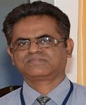

HOME / DEPARTMENT OF VTU / COMPUTER SCIENCE
ENGINEERING
ABOUT DEPARTMENT
The Department of Computer Science and Engineering has been established in the academic year 2002-2003.
The department has always attracted the best of Engineering aspirants from all over the country and abroad.
It is successful in producing skilled and competent Computer Engineers and Entrepreneurs ready to satisfy
the needs of the industry and society at large.
The department is equipped with adequate infrastructure to support academic, research and extra-curricular
activities for all round development.
The department offers Postgraduate and Research Programmes at the headquarters, Belagavi and PG centres at
Kalaburagi, Mysuru and Muddenahalli.
All the locations have serne enivirons and state of the art infrastructure to facilitate learning and
research. The faculty of the department
work in all the niche areas of Computer Science contributing to the Knowledge.
CHAIRPERSON

Dr.Shanmukhappa A Angadi
Professor and Chairperson
Department of Computer Science and Engineering
Machhe, VTU-Belagavi-590018
Mail:- chair.cse@vtu.ac.in
Cell:-+919481981542